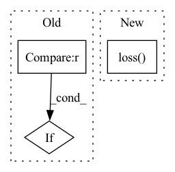

Pattern ID :38174

Before Change
return self.mark.add_mark(x, **kwargs)
def loss_fn(self, _input: torch.Tensor = None, _label: torch.Tensor = None, _output: torch.Tensor = None, **kwargs) -> torch.Tensor:
if _output is None:
_output = self.model(_input)
loss_clean = self.model.criterion(_output, _label)
poison_input = self.mark.add_mark(_input)
After Change
return self.mark.add_mark(x, **kwargs)
def loss_fn(self, _input: torch.Tensor = None, _label: torch.Tensor = None, _output: torch.Tensor = None, **kwargs) -> torch.Tensor:
loss_clean = self.model.loss(_input, _label, **kwargs)
poison_input = self.mark.add_mark(_input)
poison_label = self.target_class * torch.ones_like(_label)
loss_poison = self.model.loss(poison_input, poison_label, **kwargs)
return (1 - self.poison_percent) * loss_clean + self.poison_percent * loss_poison
In pattern: SUPERPATTERN
Frequency: 3
Non-data size: 3
Instances
Fragment ID: 109387605
Project Name: ain-soph/trojanzoo
Commit Name: bdbf67816179497c3bfb09f45ff8a2ff4da1e5c7
Time: 2021-03-11
Author: ain-soph@live.com
File Name: trojanvision/attacks/backdoor/badnet.py
M Class Name: BadNet
N Class Name: BadNet
M Method Name: loss_fn(4)
N Method Name: loss_fn(4)
M Parent Class: Attack
N Parent Class: Attack
M File Name: trojanvision/attacks/backdoor/badnet.py
N File Name: trojanvision/attacks/backdoor/badnet.py
M Start Line: 128
M End Line: 130
N Start Line: 131
N End Line: 131
'>
Before Change
outsample_mask = outsample_mask[:, -val_windows:-1, :]
// Remove last y_hat dimension if unidimensional loss (for MAE, RMSE, etc.)
if y_hat.shape[-1] == 1:
y_hat = y_hat.squeeze(-1)
loss = self.loss(y=outsample_y, y_hat=y_hat, mask=outsample_mask)
After Change
if self.loss.is_distribution_output:
distr_args = [arg[:, -val_windows:-1, :, :] for arg in output]
loss = self.loss(y=outsample_y,
distr_args=distr_args,
loc=None,
scale=None,
mask=outsample_mask)
else:
y_hat = output[:, -val_windows:-1, :, :]
loss = self.loss(y=outsample_y, y_hat=y_hat, mask=outsample_mask)
'>
Fragment ID: 109387604
Project Name: nixtla/neuralforecast
Commit Name: f22bf6b6c9e16557938ceff48393befa938d3d43
Time: 2022-11-24
Author: kin.gtz.olivares@gmail.com
File Name: neuralforecast/common/_base_recurrent.py
M Class Name: BaseRecurrent
N Class Name: BaseRecurrent
M Method Name: validation_step(3)
N Method Name: validation_step(3)
M Parent Class: pl.LightningModule
N Parent Class: pl.LightningModule
M File Name: neuralforecast/common/_base_recurrent.py
N File Name: neuralforecast/common/_base_recurrent.py
M Start Line: 280
M End Line: 292
N Start Line: 280
N End Line: 299
'>
Before Change
self.model.rel_emb.weight.norm(p = 1)
)
if self.args.model_name == "ComplEx" or self.args.model_name == "DistMult":
//Use L3 regularization for ComplEx and DistMult
regularization = self.args.regularization * (
self.model.ent_emb.weight.norm(p = 3)**3 + \
After Change
loss: The training loss for back propagation.
label = torch.Tensor([1]).type_as(pos_score)
loss = self.loss(pos_score, neg_score, label)
return loss
'>
Fragment ID: 109387607
Project Name: zjukg/neuralkg
Commit Name: 7c285acb4c928c049d09564b9963be5eabae69c3
Time: 2022-12-08
Author: 654556826@qq.com
File Name: src/neuralkg/loss/Margin_Loss.py
M Class Name: Margin_Loss
N Class Name: Margin_Loss
M Method Name: forward(3)
N Method Name: forward(3)
M Parent Class: nn.Module
N Parent Class: nn.Module
M File Name: src/neuralkg/loss/Margin_Loss.py
N File Name: src/neuralkg/loss/Margin_Loss.py
M Start Line: 13
M End Line: 33
N Start Line: 30
N End Line: 31